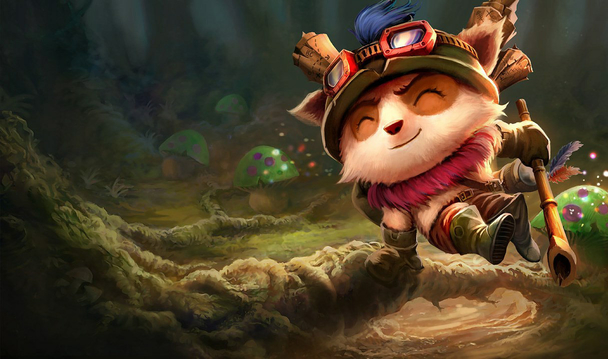
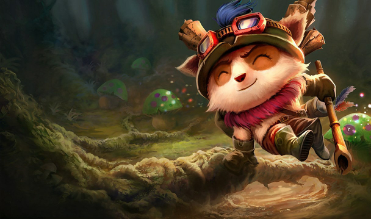

Teemo is a legend among his yordle brothers and sisters in Bandle City. As far as yordles are concerned, there is something just slightly off about him. While Teemo enjoys the companionship of other yordles, he also insists on frequent solo missions in the ongoing defense of Bandle City. Despite his genuinely warm personality, something switches off inside Teemo's mind during combat so that the lives he must end while on patrol do not burden him. Even as a young recruit, the drill instructors and other trainees found it a little disconcerting that, while Teemo was normally charming and kind, he turned deadly serious and highly efficient the minute combat exercises began. Teemo's superiors quickly steered him toward the Scouts of the Mothership, which is one of Bandle City's most distinguished Special Forces unit alongside the Megling Commandos.
While most yordles do not handle solo scouting missions with a great deal of finesse, Teemo is remarkably efficient at them. His record of success in defending Bandle City from infiltrators easily makes him one of the most dangerous yordles alive, though you'd never know it by having a cup of honey mead with him at his favorite inn. His signature weapon - a blowgun - uses a rare ajunta poison he personally gathers from the jungles of Kumungu. To help cope with his lengthy periods of isolation, Teemo recently struck up a friendship with Tristana, a fellow member of Bandle City's Special Forces. Teemo is a pint-sized foe that many have come to fear and whose small size belies his fearsome resolve.


 
